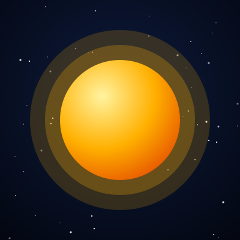
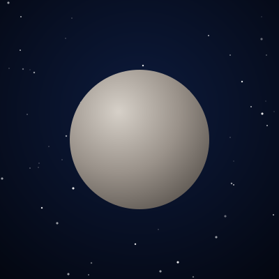
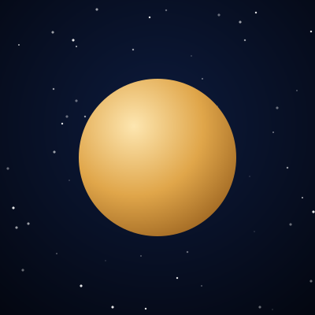
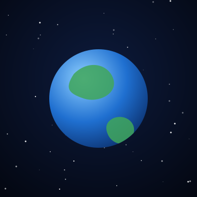
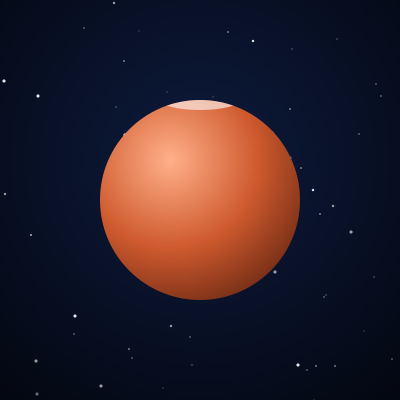
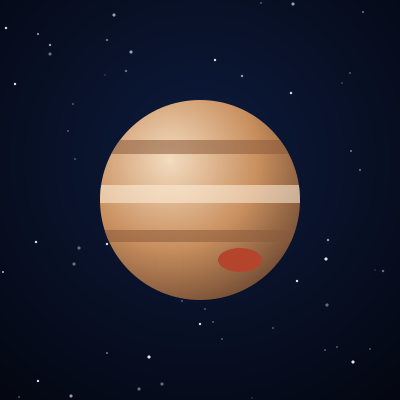
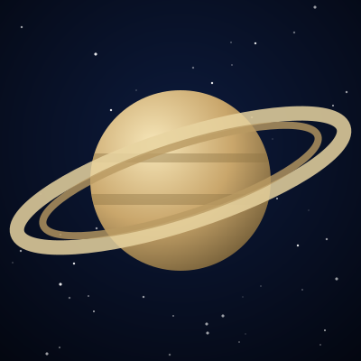
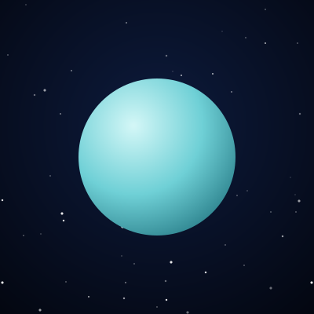
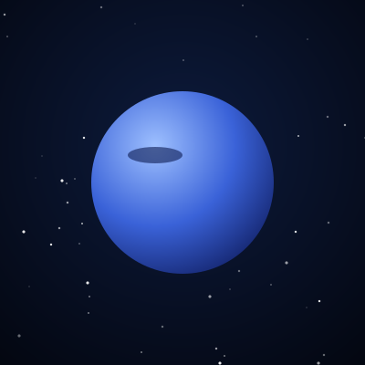

Sol
A estrela do nosso sistema, responsável por mais de 99% da massa do sistema solar.
O Sol e os oito planetas do sistema solar. Toque em “Saiba mais” para ver detalhes.

A estrela do nosso sistema, responsável por mais de 99% da massa do sistema solar.

O menor planeta e o mais próximo do Sol, com enormes variações de temperatura.

O planeta mais quente, coberto por nuvens densas de dióxido de carbono e ácido sulfúrico.

O único mundo conhecido que abriga vida, com água líquida na superfície.

O planeta vermelho, alvo de várias missões em busca de sinais de água e vida passada.

O maior planeta, um gigante gasoso com a famosa Grande Mancha Vermelha.

Famoso pelos anéis feitos de gelo e rocha, é menos denso que a água.

Um gigante de gelo que gira praticamente “deitado” em relação à sua órbita.

O planeta mais distante do Sol, com ventos supersônicos e cor azul intensa.